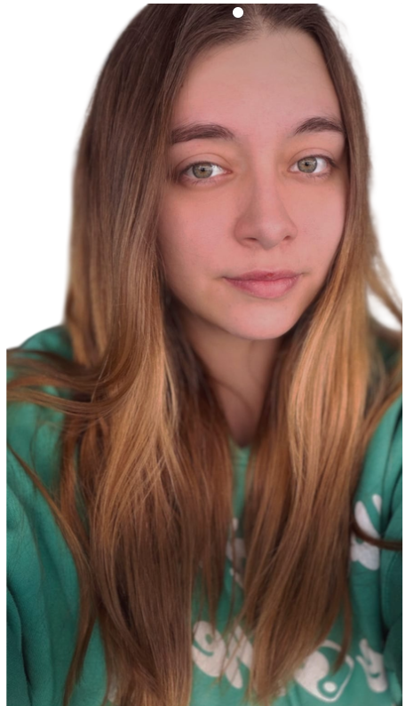

Problema
La gestión de tareas, entregas, perfiles y asignaturas puede volverse confusa cuando no existe una estructura clara por roles.
Foro de Empleo · UPV Gandia
Desarrollamos un MVP web orientado a organizar usuarios, roles, asignaturas, tareas y entregas dentro de un entorno educativo claro, funcional y escalable.
Proyecto
DOA se centra en separar claramente los flujos de docentes y alumnos para que cada usuario acceda únicamente a las funciones que necesita.
La gestión de tareas, entregas, perfiles y asignaturas puede volverse confusa cuando no existe una estructura clara por roles.
Creamos una interfaz con navegación diferenciada para docente y alumno, priorizando claridad visual, jerarquía y flujos sencillos.
Un MVP preparado para demostración, con estructura escalable, componentes reutilizables y validación funcional del recorrido principal.
Qué aportamos
Hemos trabajado el proyecto desde la planificación, el análisis de pantallas y la estructura técnica hasta la implementación frontend, la integración, la documentación y la revisión de calidad.
Equipo
Perfiles preparados para contacto profesional. Los integrantes con enlace disponible cuentan con acceso directo a LinkedIn; el resto mantienen un acceso temporal mediante búsqueda por nombre.

Project Lead · Desarrollo frontend
Coordinación del sprint, estructura de páginas, revisión visual y apoyo en la integración del MVP.
Ver LinkedInDiseño · Desarrollo
Apoyo en definición visual, maquetación de interfaces y desarrollo de pantallas del proyecto.
Buscar en LinkedInDesarrollo · Integración
Implementación de funcionalidades, organización de rutas y soporte en la integración del proyecto.
Buscar en LinkedInDesarrollo · Validación
Apoyo técnico en desarrollo, pruebas funcionales y validación de pantallas del MVP.
Buscar en LinkedInDiseño · Documentación
Documentación, análisis de interfaz, organización de entregables y apoyo en criterios de validación.
Ver LinkedInDesarrollo · Soporte técnico
Apoyo en implementación, corrección de errores y revisión técnica del proyecto.
Ver LinkedInCompetencias
Acceso rápido
Escanea el código QR para abrir la página del equipo o accede directamente mediante la URL del proyecto.
Escanear para acceder:
https://ainhoaayoroarubio.github.io/ainhoa.github.io/Contacto
Estamos disponibles para explicar el MVP, la organización del equipo, la parte técnica y el proceso seguido durante el desarrollo.